Visualization
In the Oneshot and Sequential folders, there are Plot directories containing Python scripts for generating various types of plots.
These Python files can be used after replacing the default data folders with your own datasets. Each script offers multiple plotting options,
allowing for customizable visualizations. Below is a summary of the Python scripts and their functionalities:
One-shot Method
- Python Files:
compare_Box.py: This script generates box plots to compare the performance of different HPO methods, tested ten times independently. It plots key metrics, including:Optimum found using the NN
Loss function value
Time cost
All of the above are plotted versus the number of samples (10, 20, 30, 40, and 50).
HP_Box.py: This script generates box plots showing the optimum hyperparameter values, such as:Number of neurons
Number of layers
Epoch size
Activation function
These are plotted versus the number of samples (10, 20, 30, 40, 50).
- Example Plots:
The box plots created by both scripts allow for visualizing trends in the data by accounting for the randomness of NN behavior. These plots summarize the results of testing the HPO methods ten times independently.
Optimization Performance:
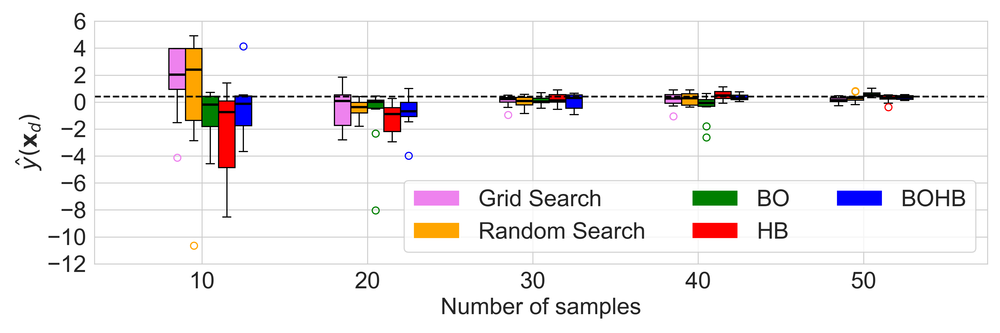
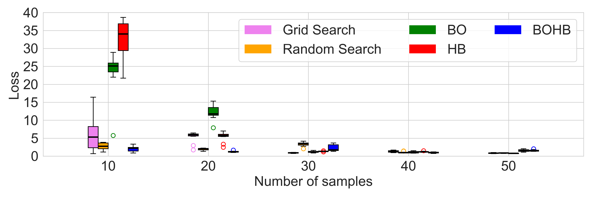
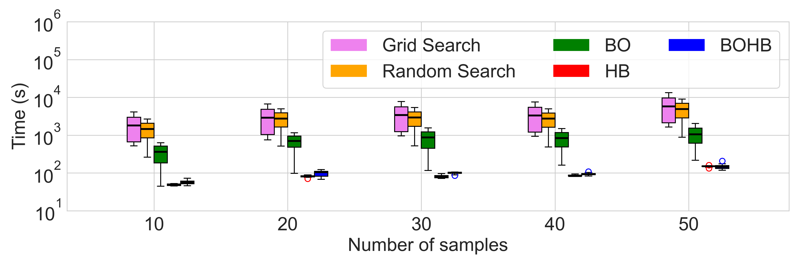
Hyperparameter Convergence:
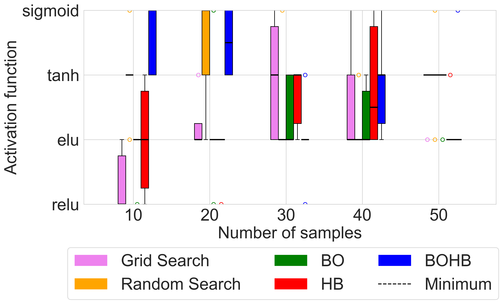
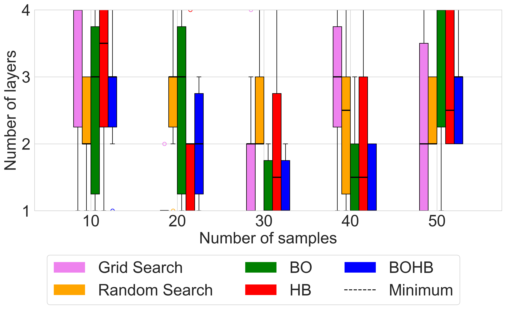
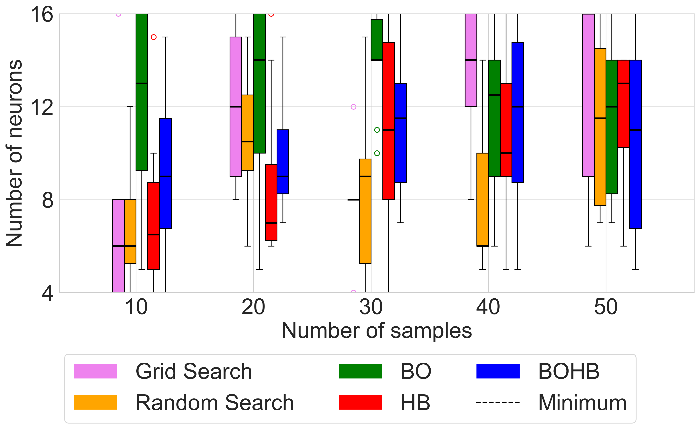
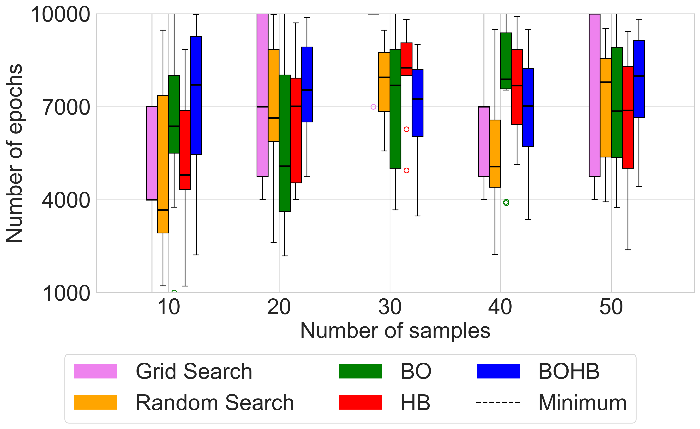
{kind=link}
{kind=link}
{kind=link}
{kind=link}
{kind=link}
{kind=link}
{kind=link}
Sequential Sampling
- Python Files:
MeanVariancePlot.py: This script generates mean and variance plots, where solid lines represent mean values and shaded areas indicate one standard deviation. The key metrics plotted include:Optimum found using the NN
Loss function value
Time cost
Optionally, time cost can be placed on the x-axis to compare methods in terms of efficiency.
These are plotted versus the number of infill samples added (10 to 55 samples).
HP_MeanVariancePlot.py: This script generates mean and variance plots for hyperparameters such as:Number of neurons
Number of layers
Epoch size
Activation function
These are plotted versus the number of infill samples (10 to 55).
- Example Plots:
The mean and variance plots illustrate trends by showing the average performance and variability across ten independent tests. The shaded area helps to visualize the range of variability in the results.
Optimization Performance:
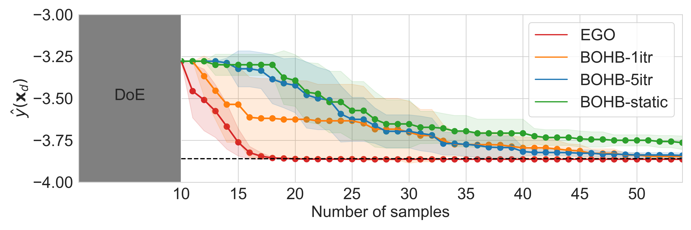
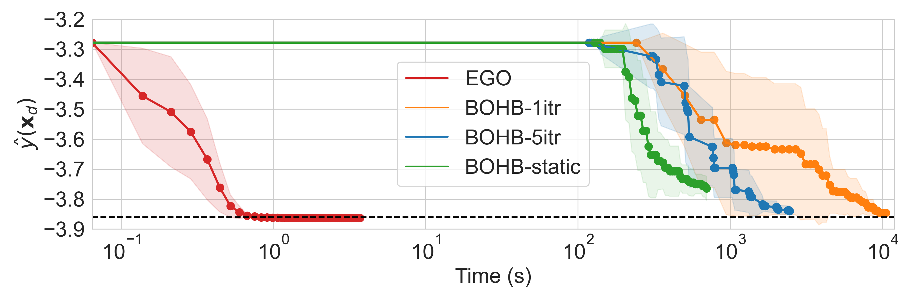
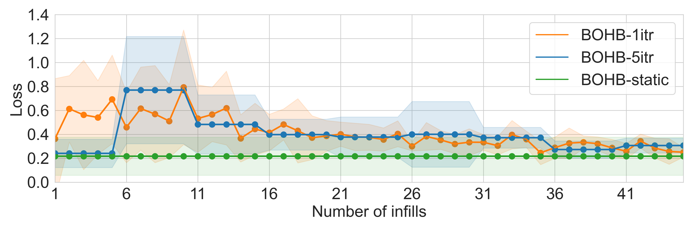
Hyperparameter Convergence:
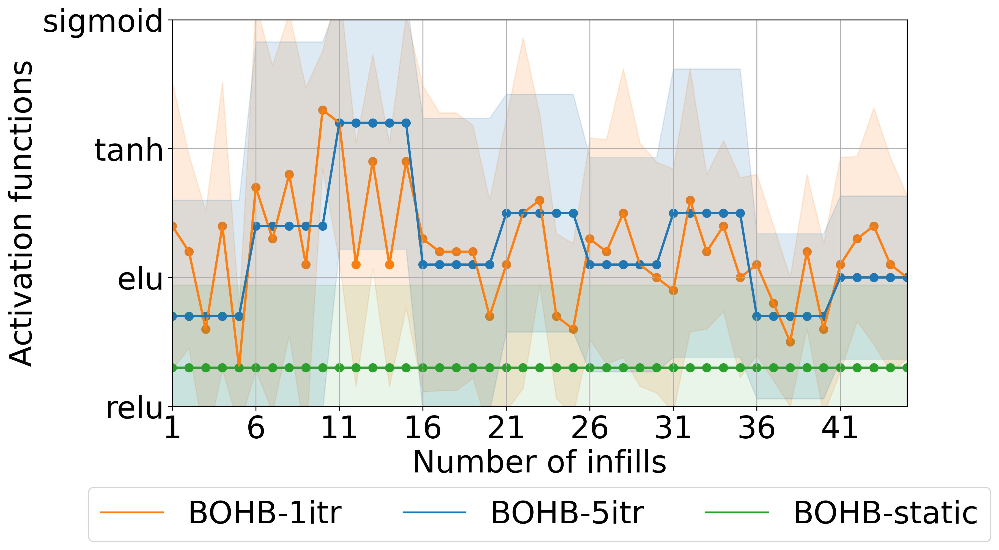
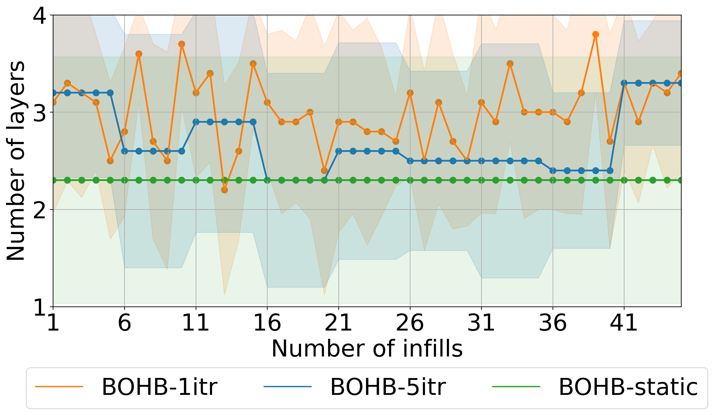
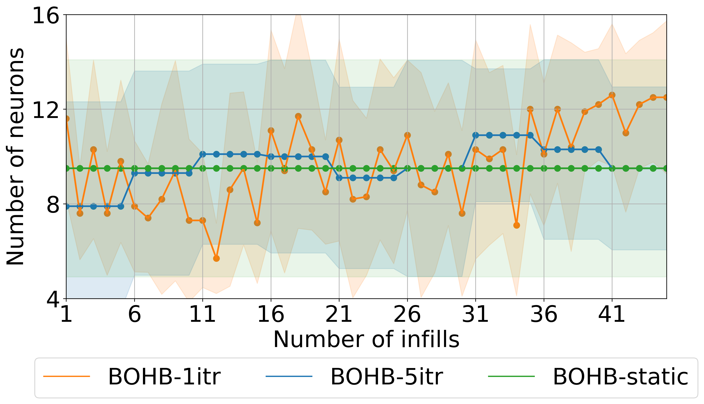
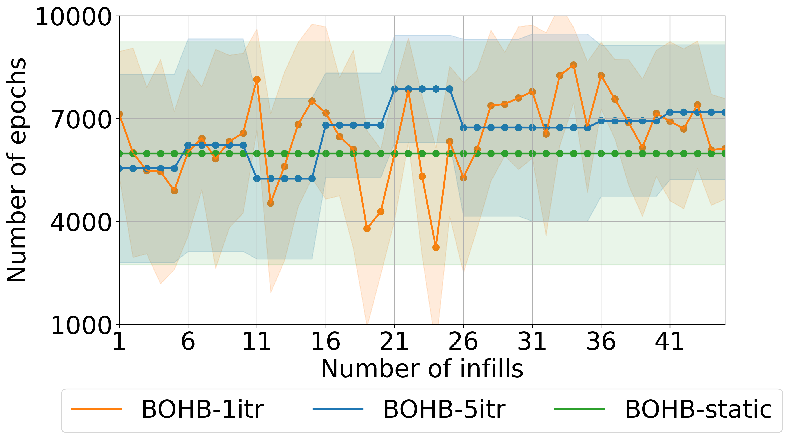
{kind=link}
{kind=link}
{kind=link}
{kind=link}
{kind=link}
{kind=link}
{kind=link}